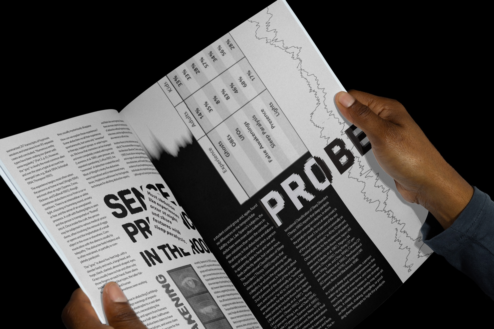
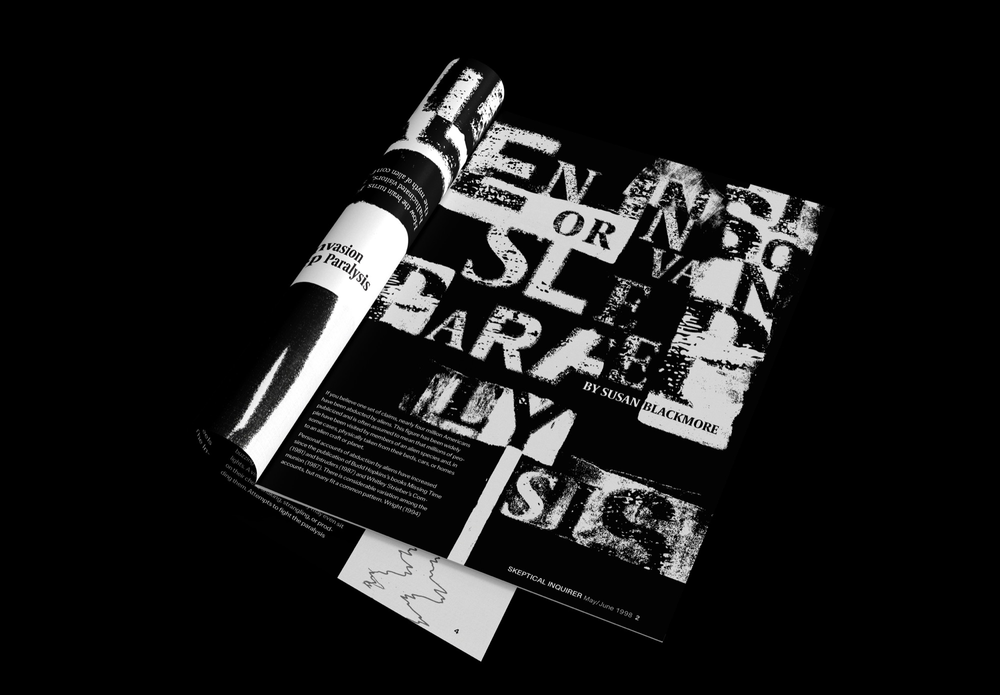
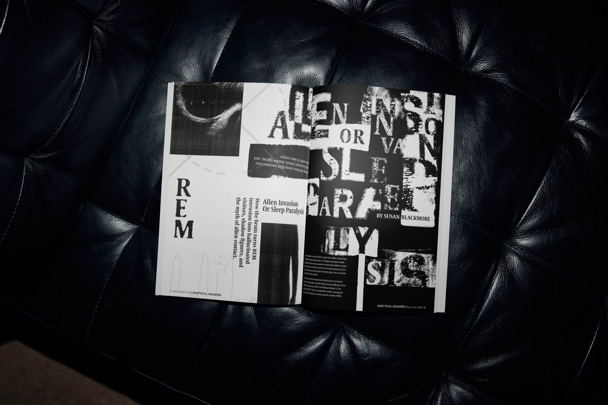

Alien Invasion or Sleep Paralysis?
A black-and-white editorial spread exploring sleep paralysis through distorted headline typography, dark photography, and a structured text grid.
- Deliverables
- Editorial spreads, display type, black-and-white imagery
The article explores sleep paralysis and experiences that people may associate with alien encounters. I wanted the layout to reflect the uncertainty of the subject without making the article itself difficult to read.
The central design decision was to create a contrast between visual disorientation and editorial structure: the opening feels unstable, while the body text returns to a more controlled layout.
- Article analysis and research
- Thumbnail layouts
- Typography and composition studies
- Image selection and cropping
- Final two-page editorial spread
From references to layouts





The opening uses stretched, warped capital letters that overlap and run beyond the page edges. The word REM sits vertically along the side, introducing a typographic interruption that reinforces the subject of sleep. Dark, high-contrast photographs sit among the oversized letters, adding to the uneasy atmosphere.
The body pages shift to narrow, dense text columns on white. Byline information and introductory copy follow a more conventional hierarchy, giving the reader a stable way into the article after the disruptive opening.
The contrast is intentional: the typography and photography express the disorientation of sleep paralysis, while the grid keeps the overall spread organized. The design uses that tension to connect the visual experience with the article's subject.